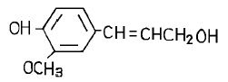
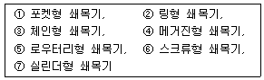
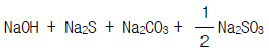
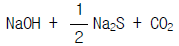
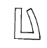
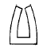

임산가공산업기사 (2004-08-08 기출문제)
1과목: 목재이학
1. 건조전의 무게가 100g인 목재를 전건시켰더니 50g이 되었다. 이 목재의 함수율은 얼마인가?
- 10%
- 50%
- 100%
- 150%
(정답률: 알수없음)

2. 목재의 종인장 강도와 횡인장 강도는 어느 쪽이 큰가?
- 횡인장 강도와 종인장 강도는 비교할 수 없다
- 종인장 강도와 횡인장 강도는 같다
- 종인장 강도가 크다
- 횡인장 강도가 크다
(정답률: 알수없음)
3. 다음 수종 중 비중이 가장 큰 것은 어느 것인가?
- 상수리나무
- 해송
- 자작나무
- 오동나무
(정답률: 알수없음)
4. 목재에 있어서 인장강도가 가장 큰 것은?
- 반경방향
- 접선방향
- 섬유방향
- 섬유와 직각방향
(정답률: 알수없음)
5. 목재의 강도에 관한 설명 중 옳지 않은 것은?
- 섬유포화점 이하에서 함수율의 증가는 목재의 강도를 저하시킨다.
- 일반적으로 비중이 큰 목재는 강도가 크다.
- 섬유방향의 압축강도는 섬유의 직각방향의 압축강도 보다 크다.
- 동일목재에서 목재에 재하(載荷)되는 속도에 따른 강도 차이는 없다.
(정답률: 알수없음)
6. 들보(beam)에 작용하는 기본응력으로 볼 수 없는 것은?
- 압축응력
- 인장응력
- 전단응력
- 충격응력
(정답률: 알수없음)
7. 목재의 강도와 수분과의 관계를 기술한 것 중 옳은 것은?
- 목재내의 자유수는 그 양이 증감하여도 강도에 영향을 주지 않는다.
- 목재내의 자유수의 양이 증가하면 강도는 약해진다.
- 목재내의 자유수의 양이 감소하면 강도는 약해진다.
- 목재내의 자유수의 양이 감소하면 강도는 강해진다.
(정답률: 알수없음)
8. 목재의 열전도율 변이에 영향을 미치지 않는 인자는?
- 비중
- 탄성
- 함수율
- 목리방향
(정답률: 알수없음)
9. 목재의 비열에 가장 많은 영향을 미치게 하는 것은?
- 수종
- 비중
- 변심재
- 함수율과 온도
(정답률: 알수없음)
10. 다음 중 목재의 접선 및 반경방향의 측정용 시편의 크기로서 알맞은 것은?
- 한변의 길이는 20mm 이고 두께는 5mm 이다.
- 한변의 길이는 21-30mm 이고 두께는 5mm 이다.
- 한변의 길이는 40mm 이고 두께는 5mm 이다.
- 한변의 길이는 50mm 이고 두께는 5mm 이다.
(정답률: 알수없음)
11. 목재의 수축팽창 현상은 다음 중 어느 것을 경계로 발생 되는가?
- 섬유포화점
- 평형함수율
- 비례한계
- 이력현상
(정답률: 알수없음)
12. 섬유포화점인 함수율 28% 상태의 목재 실질의 비중은 얼마인가?(단, 세포막 실질의 비중은 1.46임)
- 1.09
- 1.18
- 1.19
- 1.20
(정답률: 알수없음)
13. 다음 중 일반적으로 통용되는 목재의 진비중 수치는?
- 1.30
- 1.35
- 1.53
- 1.69
(정답률: 알수없음)
14. 목재의 비중에 대한 설명 중 옳은 것은?
- 같은 용적의 물의 중량에 대한 목편 중량의 비
- 목편의 중량
- 생재중량에 대한 전건중량
- 생재용적에 대한 전건용적
(정답률: 알수없음)
15. 표면 함수율이 60%, 중심 함수율이 70%인 목재의 두께는 5.5cm이다. 수분 경사는 대략 얼마가 되겠는가?
- 3.6%/cm
- 7.6%/cm
- -3.6%/cm
- -7.6%/cm
(정답률: 알수없음)
16. 목재의 건조속도에 영향하는 인자 중 외주 조건이 아닌것은?
- 건구온도
- 건습구 온도차
- 비중
- 풍속
(정답률: 알수없음)
17. 이퀄라이징(equalizing)을 할 때 예정함수율보다 약 2% 더 건조하는데 무엇을 기준으로 하는가?
- 최습 샘플 보오드
- 최건 샘플 보오드
- 평균 함수율
- 맨위의 건조재의 함수율
(정답률: 알수없음)
18. 목재의 3방향에 따라 수축률이 가장 큰것부터 순서대로 나열한 것은?
- 반경방향 ＞ 접선방향 ＞ 축방향
- 축방향 ＞ 접선방향 ＞ 반경방향
- 접선방향 ＞ 축방향 ＞ 반경방향
- 접선방향 ＞ 반경방향 ＞ 축방향
(정답률: 알수없음)
19. 전건비중 0.5인 전건소나무재의 전기저항으로 가장 알맞는 것은?
- 104 ohms
- 106 ohms
- 108 ohms
- 1018 ohms
(정답률: 알수없음)
20. 섬유 포화점에서의 목재 함수율은?
- 5 - 10%
- 13 - 15%
- 18 - 20%
- 25 - 35%
(정답률: 알수없음)
2과목: 목재화학
21. Lignin에 가장 많이 있는 구조는?
- phenyl propane
- acetal
- carbonyl
- carboxylic
(정답률: 알수없음)
22. 활엽수재의 mannan 함량은 몇 % 정도인가?
- 5%
- 10 %
- 15 %
- 20%
(정답률: 알수없음)
23. 목재의 세포벽 성분을 분석하기 위한 탈지(脫脂)시료 제조시 사용되는 방법은?
- 온수 추출처리
- 1% NaOH 추출처리
- 알콜-벤젠 추출처리
- 알콜 추출처리
(정답률: 알수없음)
24. Pimaric Acid 는 C7 위치에서 Vinyl기와 무슨 기를 갖고 있는가?
- COOH 기
- OH 기
- COO 기
- CH3 기
(정답률: 알수없음)
25. 다음 구조식의 이름은?

- Coumaryl Alcohol
- Coniferyl Alcohol
- Sinapyl Alcohol
- Cinamic Alcohol
(정답률: 알수없음)
26. 알칼리셀룰로오스를 모노크롤초산(ClCH2COONa)에 침적시킨 후 가성소다용액을 첨가하여 얻어지는 셀룰로오스 유도체는?
- Methylcellulose
- Carboxymethylcellulose(CMC)
- Hydroxyethylcellulose
- Cyanoethylcellulose
(정답률: 알수없음)
27. 침엽수 이상재(異常材)는 정상재(正常材)에 비하여 어떠한가?
- Hemicellulose가 많고 Lignin량이 적다.
- Cellulose가 많고 Lignin량이 적다.
- Lignin이 많고 Cellulose량이 적다.
- Cellulose와 Lignin량에 변함이 없다.
(정답률: 알수없음)
28. 셀룰로오스의 결정성이 증가하면 일어나는 사항이 아닌것은?
- 영(Young)율이 증가한다.
- 밀도가 증가 한다.
- 신축성이 작아진다.
- 유연성이 증가한다.
(정답률: 알수없음)
29. 리그닌에 대한 설명으로 옳지 않은 것은?
- 천연 고분자로 망상구조를 가진다.
- 온대산 침엽수에 20~30% 함유되어 있다.
- 페놀성 물질로 메톡실기 등을 가진다.
- 냉수에 추출되어 쉽게 단리할 수 있다.
(정답률: 알수없음)
30. 침엽수재의 주요 헤미셀룰로오스는?
- 글루크로노자일란(glucuronoxylan)
- 글루코만난(glucomannan)
- 아라비노갈락탄(arabinogalactan)
- 글루칸(glucan)
(정답률: 알수없음)
31. 목재 중 리그닌이 가장 많이 함유되어 있는 곳은?
- 형성층
- 세포간층
- 1차벽
- 2차벽
(정답률: 알수없음)
32. 목재건류(木材乾溜)에서 생성되는 목정(木精)이란?
- ethanol
- Propanol
- butanol
- methanol
(정답률: 알수없음)
33. 목재의 구성세포 중 축방향으로 길게 연속된 통 모양의 관으로 수분의 통도작용을 담당하는 것은?
- 도관
- 유세포
- 수지구
- 목섬유
(정답률: 알수없음)
34. 셀룰로오스유도체에서 치환도(degree of substitution, DS)가 사용되는데, 이것이 나타내는 것은?
- 무수 glucose 잔기에 있어서 전수산기 3개 중 치환된 수산기의 평균수
- 무수 glucose 잔기에 있어서 전수산기 4개 중 치환된 수산기의 평균수
- 무수 glucose 잔기에 있어서 전수산기 5개 중 치환된 수산기의 평균수
- 무수 glucose 잔기에 있어서 전수산기 6개 중 치환된 수산기의 평균수
(정답률: 알수없음)
35. 셀룰로오스의 결정화도가 증가하면?
- 밀도가 증가한다.
- 유연성이 증가한다.
- 팽윤성이 증가한다.
- 신장성이 증가한다.
(정답률: 알수없음)
36. 수용성의 폴리페놀성 물질로서 가수분해형과 축합형으로 구분되고 수검성이 있으며 대개 FeCl3에 의해 청색이나 녹색의 정색반응을 나타내는 물질은 무엇인가?
- 수지
- terpenoid
- tannin
- flavonoid
(정답률: 알수없음)
37. 목재의 유기용제 추출물에서 주로 얻을 수 있는 물질은?
- 리그닌
- 전분
- 정유
- 회분
(정답률: 알수없음)
38. 셀룰로오스에 대한 설명으로 옳지 않은 것은?
- 목재 등 고급 식물 세포벽의 주성분이다.
- 상온에서 묽은 산과 알칼리에 안정하다.
- 목재 셀룰로오스의 경우 실험실적으로 완전 정제가 가능하다.
- β -1, 4 결합한 D - glucose 잔기로 이루어진 쇄상 고분자 물질이다.
(정답률: 알수없음)
39. Cellulose 의 구조 또는 성질을 나타낸 것으로 옳지 않은 것은?
- β -1, 4-D-Glucoside 결합한 고분자 화합물이다.
- 동암모니아 용액에 용해된다.
- 산화에 의해 카르보닐기가 생성된다.
- 다당류(多糖類)이므로 끊는 물에 녹는다.
(정답률: 알수없음)
40. 망그로브 목재를 온수추출하였을 때 가장 많이 추출되는 성분은?
- 정유(essential oil)
- 지방(fats)
- 탄닌(tannin)
- 수지산(resin acid)
(정답률: 알수없음)
3과목: 펄프제지학
41. 시간당 10톤의 원료를 투입하여 종이 제품을 9.5톤 생산 하였다. 이 때 총괄 보류도는?
- 65 %
- 75 %
- 85 %
- 95 %
(정답률: 알수없음)
42. 다음에서 쇄목펄프 제조용 쇄목기(Wood Grinder)의 종류가 올바르게 나열된 것은?

- ①, ②, ③, ④
- ②, ③, ④, ⑤
- ①, ③, ④, ⑥
- ④, ⑤, ⑥, ⑦
(정답률: 알수없음)
43. 제지용 화학펄프에 남는 목재성분 중 알파-셀룰로오스의 함량은?
- 50 %
- 60 %
- 70 %
- 80 %
(정답률: 알수없음)
44. 원목과 원목의 마찰과 충격을 이용하여 박피하는 박피기는?
- 로스헤드 박피기
- 롤러 지지 드럼박피기
- 수압 박피기
- 메카니컬 링형 박피기
(정답률: 알수없음)
45. 크라프트펄프화 중 활성알칼리를 나타내는 것은?
- 용액중의 총 Na염

- NaOH + Na2S

(정답률: 알수없음)
46. 함수율: 10 %, 목재칩: 1,000 kg 에서 함수율: 7 %, 펄프: 2,000 kg 을 얻었을 때 이 펄프의 수율은?
- 50 %
- 55 %
- 60 %
- 65 %
(정답률: 알수없음)
47. 로진 사이징(Rosin sizing)시 사이징 효과의 향상 목적으로 투여하는 첨가제는?
- 실리카
- 마그네슘
- 알루미늄
- 알람
(정답률: 알수없음)
48. 종이의 사이징(Sizing) 효과를 측정하는 방법이 아닌 것은?
- KBB 법
- COBB 법
- 광산란 측정법
- 접촉각 측정법
(정답률: 알수없음)
49. 중성 또는 알칼리 초지시 습윤지력을 증대시킬 수 있는 첨가물은?
- 알람
- 에폭시폴리아미드 레진
- 로진 사이즈제
- 산성염료
(정답률: 알수없음)
50. 펄프 제조시 원목에 잔존하는 수피는 목재중량에 대하여 몇 % 정도 허용될 수 있는가?
- 1 %
- 3 %
- 5 %
- 7%
(정답률: 알수없음)
51. 가장 이상적인 칩(chip)의 길이와 나비는 10∼30mm 이다 두께는 몇 mm 정도 인가?
- 2∼4 mm
- 4∼6 mm
- 6∼8 mm
- 8∼10 mm
(정답률: 알수없음)
52. 아황산펄프 제조시 사용되는 약품이 아닌 것은?
- Ca(HSO3)2
- Mg(HSO3)2
- NaHSO3
- KHSO3
(정답률: 알수없음)
53. 다층판지(多層板紙)에서 뻣뻣이(stiffness)는 어느 층에서 가장 높은가?
- 표층라이너
- 아표층라이너
- 중간층
- 이층라이너
(정답률: 알수없음)
54. 고해도를 측정할 때 캐나다 표준형의 경우 절건시료의 무게는?
- 1 g
- 2 g
- 3 g
- 4 g
(정답률: 알수없음)
55. 다단표백 CEDED 과정에서 D 단계는 어떤 약품으로 처리하는 단계인가?
- 염소가스
- 가성소다
- 차아염소산염
- 이산화염소
(정답률: 알수없음)
56. 크라프트펄프화 공정 중 백액을 설명한 것으로 옳은 것은?
- 회수공정에서 손실된 소다(Na)분을 보충해 주는 약액이다.
- 흑액을 연소한 후 물에 용해시켜 얻은 약액이다.
- 증해폐액으로 회수로에서 연소하기 전까지 일컫는 용액이다.
- 녹액을 가성화시켜 얻는 액으로 증해액으로 사용된다.
(정답률: 알수없음)
57. 종이의 코팅제(Coatings) 중 접착제로 이용되지 않는 것은?
- 변성전분
- 카제인(Casein)
- 라텍스(Latex)
- 카오린(Kaolin)
(정답률: 알수없음)
58. 크라프트펄프 제조에서 가성화 장치가 필요한 이유는?
- 폐액연소에서 나트륨염이 Na2S로 얻어지기 때문
- 폐액연소에서 나트륨염이 Na2CO3로 얻어지기 때문
- 폐액연소에서 보충된 Na2SO3가 Na2CO3로 변하기 때문
- 폐액연소에서 첨가된 Na2SO4가 Na2S로 변하기 때문
(정답률: 알수없음)
59. 수지장해(樹脂障害)를 가장 많이 일으키는 수종은?
- 낙엽송
- 리기다소나무
- 신갈나무
- 자작나무
(정답률: 알수없음)
60. 펄프의 공업적 표백에 사용되지 않는 산화제는?
- H2O2
- NaClO2
- ClO2
- KMnO4
(정답률: 알수없음)
4과목: 임산제조학
61. 활성탄 제조법에 속하지 않는 것은?
- 착색 부활법
- 염화아연 부활법
- 수증기 부활법
- 염소 부활법
(정답률: 알수없음)
62. 원목에서 합판을 제조하기 까지의 공정순서가 옳게 배열된 것은?
- 증자 → 박피 → 절삭 → 건조 → 접착
- 증자 → 건조 → 박피 → 접착 → 건조
- 박피 → 절삭 → 건조 → 증자 → 접착
- 박피 → 건조 → 절삭 → 증자 → 접착
(정답률: 알수없음)
63. 식물성 유지 추출용매로 쓰이지 않는 것은?
- 벤젠
- 페놀
- 석유벤젠
- 사염화탄소
(정답률: 알수없음)
64. 제재판을 길이 방향으로 접합시키는 길이 접합의 종류 중 핑거 조인트에 대한 설명이 잘못된 것은?
- 원목의 이용율이 낮아지며, 작업이 어렵다
- 유효강도는 약 60∼80%정도이다
- 핑거의 경사는 1/10∼1/8정도가 적당하다
- 피치는 핑거 길이의 1/2정도가 적당하다
(정답률: 알수없음)
65. 목재 표면에 발생하여 청록색이나 흑색의 변색을 일으키며, 균사가 목재 조직 속에 침투하지 않는 것이 특징인 변색균은?
- 청변균
- 갈변균
- 표면오염균
- 자낭균류
(정답률: 알수없음)
66. 매월 건조재 사용량이 동일 수종 재종으로 140 m3인 공장이 있다. 건조 소요일수 평균 6일 (잔적및 하적포함)일 때 어느 정도 용량의 건조실을 만들면 좋은가?
- 7 m3 3실
- 12 m3 2실
- 20 m3 1실
- 30 m3 1실
(정답률: 알수없음)
67. 다음은 파티클 보오드의 대표적인 제조공정을 나타낸 것이다. 공정이 가장 옳은 것은?
- 목재 파티클 → 건조 → 접착제 첨가 → 성형 → 압축 →제품
- 목제 파티클 → 접착제 첨가 → 성형 → 건조 → 압축 →제품
- 목제 파티클 → 접착제 첨가 → 성형 → 압축 → 건조 →제품
- 목제 파티클 → 성형 → 접착제 첨가 → 건조 → 압축 →제품
(정답률: 알수없음)
68. 목재의 건조 후기에 있어서 프롱 테스트(prong test)를 하면 다음 그림 중 어떤 모양을 나타내는가?


(정답률: 알수없음)
69. 파아티클보오드 제조시 두께가 얇고 크기가 엄밀하게 규정 되어 있는 소편으로서 절삭에 의해서 만들어진 것은?
- splinter
- flake
- shaving
- excelsior
(정답률: 알수없음)
70. 한번에 여러 개의 판을 제재할 수 있는 톱은?
- 띠톱(band saw)
- 갱톱(gang saw)
- 밀톱(drag saw)
- 체인톱(chain saw)
(정답률: 알수없음)
71. 목재 당화시 헤미셀룰로오스로 부터 얻은 푸르푸랄의 용도에 해당되지 않는 것은?
- 세제(洗劑)
- 나일론 원료
- 합성수지용제(合成樹脂溶劑)
- 글루타민산 나트륨
(정답률: 알수없음)
72. 다음 목재방부제 중 유상방부제(油狀防腐劑)에 해당하는 것은?
- CCA(chromated copper arsenate)
- ACC(acid copper chromate)
- 크레오소트(creosote)
- 나프텐산구리(copper naphthenate)
(정답률: 알수없음)
73. 셀룰로오스로부터 에탄올을 생산하는 생물학적 방법으로 셀룰로오스를 가수분해 시킬 수 있는 효소가 아닌 것은?
- endo-β -(1,4)-gluconases
- exo-β -gluconases
- β -(1,4)-gluconases
- Laccase
(정답률: 알수없음)
74. 램의 직경이 12.7 cm의 프레스를 이용해 피압재(가압면적 20 × 20 cm)에 10 kg/cm2의 압력을 가하려면 게이지 압력은 얼마로 조정해야 하는가?
- 약 42 kg/cm2
- 약 32 kg/cm2
- 약 22 kg/cm2
- 약 12 kg/cm2
(정답률: 알수없음)
75. 목재당화 방법 중 묽은 황산고온법으로서 cellulose의 hexose류로의 가수분해와 함께 생성된 당류가 분해되므로 당수율을 증가시키기 위해서는 생성된 당의 분해를 최소한으로 감소시켜 가능한 한 빨리 가수분해탑 밖으로 꺼내야 하는 방법은?
- Proder 법
- 신 Rheinau 법
- 북해도법
- Scholler 법
(정답률: 알수없음)
76. 목재의 재면(材面)이 수간에 평행하게 수심(髓心)을 통하여 절단된 면은?
- 경단면(徑斷面)
- 촉단면(觸斷面)
- 목구면(木口面)
- 횡단면(橫斷面)
(정답률: 알수없음)
77. 단판 절삭전 원목의 전처리와 관계 없는 것은?
- 단판의 건조시간을 단축시킨다.
- 날끝을 상하게 하는 인자를 배제한다.
- 원목의 수분 분포를 균일히 한다.
- 단판에 발생하는 할렬을 감소시킨다.
(정답률: 알수없음)
78. 천연건조에 사용하는 잔목(棧木 sticker)은 수종 및 판자의 두께에 따라서 변경하는 것이 좋으나 일반적으로 사용되는 것은?
- 두께 1.5 - 2.0 cm 나비 1.0 - 1.5 cm
- 두께 2.0 - 3.0 cm 나비 2.5 - 7.5 cm
- 두께 3.5 - 4.5 cm 나비 5.5 - 9.5 cm
- 두께 4.5 - 6.0 cm 나비 7.5 - 11.5 cm
(정답률: 알수없음)
79. 목탄의 품질에 대한 설명 중 적당하지 않는 것은?
- 백탄의 경우 수피가 없고 흑탄은 수피가 완전해야 한다.
- 질이 치밀하고 경도가 높아야 한다.
- 함수률이 10%이하이어야 한다.
- 비중과 용적중이 작아야 한다.
(정답률: 알수없음)
80. 방부 처리법 중 가압 주입법과 관계 없는 것은?
- 충세포법
- 로우리법
- 침지법
- 뤼핑법
(정답률: 알수없음)